Journal of Fluid Flow, Heat and Mass Transfer (JFFHMT)
ISSN: 2368-6111

Volume 1, Year 2014 - Pages 23-29
DOI: 10.11159/jffhmt.2014.004
Natural Convection and Entropy Generation in a Porous Enclosure with Sinusoidal Temperature Variation on the Side Walls
Iman Zahmatkesh
Department of Mechanical Engineering, Mashhad Branch, Islamic Azad University, Mashhad, Iran
zahmatkesh5310@mshdiau.ac.ir
Abstract - This paper reports an analysis of natural convection and entropy generation inside a square porous enclosure with sinusoidal temperature variation on the side walls. The natural convection heat transfer is calculated by solving numerically the mass, momentum, and energy conservation equations. Moreover, the generation of entropy is discussed in terms of heat transfer irreversibility and fluid friction irreversibility. As thermal boundary conditions, the two horizontal walls are maintained adiabatic. Meanwhile, both symmetric and anti-symmetric sinusoidal temperature distributions are applied to the side walls and the corresponding results are compared. It is found that, although the case with anti-symmetric temperature boundary conditions achieves higher heat transfer, it suffers from high entropy generation rate.
Keywords: Porous medium, Natural convection, Entropy generation, Enclosure, Non‑uniform temperature distribution.
© Copyright 2015 Authors This is an Open Access article published under the Creative Commons Attribution License terms. Unrestricted use, distribution, and reproduction in any medium are permitted, provided the original work is properly cited.
Date Received: 2013-08-01
Date Accepted: 2014-09-28
Date Published: 2014-10-10
Nomenclature
- 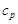: constant pressure specific heat, [J/kg.K]
- 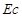: Eckert number, [-]
- : fluid friction irreversibility, [-]
- : gravitational acceleration, [m/s2]
- 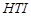: heat transfer irreversibility, [-]
- 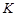: permeability, [m2]
- : enclosure height, [m]
- 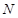: local dimensionless entropy generation rate, [-]
- : global dimensionless entropy generation rate, [-]
- 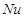: local Nusselt number, [-]
- 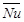: average Nusselt number, [-]
- : pressure, [Pa]
- : Darcy-modified Rayleigh Number, [-]
- 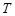: temperature, [K]
- : reference temperature, [K]
- : temperature difference, [K]
- 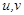: velocity components in x and y directions, [m/s]
- 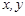: Cartesian coordinates, [m]
- 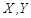: dimensionless coordinates, [-]
Greek symbols
- : effective thermal diffusivity, [m2/s]
- 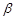: volumetric expansion coefficient, [K-1]
- : kinematic viscosity, [m2/s]
- : density, [kg/m3]
- 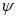: stream function, [m2/s]
- 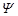: dimensionless stream function, [-]
- : dimensionless temperature, [-]
- 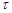: dimensionless temperature difference, (=), [-]
1. Introduction
As a consequence of diverse applications of porous media in the construction of industrial devices ranging from electrical heaters [1] to solar collectors [2], considerable interest has been drawn to study flow as well as thermal fields inside these materials. One of the issues in this field goes back to the development of natural convective flows inside enclosures filled with a fluid-saturated porous medium. This problem occurs in numerous practical applications such as thermal insulation technology, ground water hydrology, petroleum reservoir modeling, and storage of radioactive nuclear waste materials. Consequently, it is not surprising to see considerable interest on the analysis of natural convection inside porous enclosures. Nevertheless, previous works have mainly been concentrated on enclosures with constant wall temperatures and those with non‑uniform temperature boundary conditions have received less attention in spite of their significance.
In an enclosure with constant wall temperatures, finite discontinuities in temperature distribution appear at the edges. The discontinuities can be removed if one chooses non-uniform temperature distributions along the walls. Moreover, by employing non-uniform heating/cooling, the establishment of flow and thermal fields as well heat transfer characteristics inside the enclosure can be controlled.
Saeid [3] has analyzed natural convection inside a porous enclosure with partially‑heated bottom wall, cooled top wall, and adiabatic vertical walls. He demonstrated that, average Nusselt number enhances with the length of heat source and with the amplitude of temperature variation. Basak et al. [4] have investigated a porous enclosure with uniformly/non-uniformly heated bottom wall, adiabatic top wall, and constant temperature on the cold vertical walls. Concerning their results, they concluded that, non-uniform heating of the bottom wall provides higher heat transfer rates at the central region of the bottom wall whereas the corresponding average Nusselt number is lower. Later, they observed similar trend in an enclosure with uniformly/non-uniformly heated bottom and left walls, adiabatic top wall, and constant temperature right wall [5]. Sathiyamoorthy et al. [6] have simulated a porous enclosure wherein the bottom wall was heated uniformly, the left wall was linearly heated, the right wall was heated linearly or cooled, and the top wall was thermally insulated. Oztop [7] has discussed natural convection in a partially-cooled inclined porous enclosure with one side wall at constant hot temperature, one adjacent wall being partially-cooled, and the remaining ones adiabatic. Varol et al. [8] have studied an enclosure with a sinusoidal temperature profile on the bottom wall wherein other walls were thermally insulated. They demonstrated that, heat transfer rate increases with increase in the amplitude of the sinusoidal temperature function and decreases with increasing aspect ratio of the enclosure. More recently, Yedder and Erchiqui [9] have investigated a tall porous enclosure with uniformly heated bottom wall, adiabatic top wall, and temperature profile on the cold vertical walls.
All of the aforesaid studies are the First-Law (of thermodynamics) analyses of non‑uniformly heated/cooled porous enclosures. Currently, Second-Law based discussions are using to study entropy generation. This can clarify the significance of irreversibility related to heat transfer, fluid friction, and other non-ideal processes within thermal systems and enables us to find thermal boundary conditions whereby minimum irreversibility is produced. Consequently, attention needs to be paid to the problem of entropy generation in porous enclosures with non-uniform wall temperatures. In spite of that, to the author's knowledge, the subject has not been investigated extensively.
Zahmatkesh [10] has analyzed the importance of thermal boundary conditions of the heated/cooled walls in heat transfer as well as entropy generation inside of a porous enclosure with heated bottom wall, cooled vertical walls, and adiabatic top wall. For this purpose, he undertook both heating and cooling uniformly and non-uniformly and compared the correspond results. Zahmatkesh [10] demonstrated that, uniform heating/cooling achieves the highest heat transfer rates whereas non-uniform cooling suffers from the lowest. In spite of that, he found that, entropy generation is likely to be the highest for uniform heating/cooling and the lowest for non-uniform heating. A further analysis of this subject has been recently reported by Basak et al. [11]. More recently, Zahmatkesh has discussed entropy generation during natural convection in rectangular porous enclosures with three adiabatic walls [12] as well as oblique enclosures [13].
To continue this effort, the present study investigates the development of flow, heat transfer, and entropy generation inside a square porous enclosure that is depicted in Fig. 1.
Here, the horizontal walls are maintained adiabatic while symmetric/anti-symmetric sinusoidal temperature distributions are applied to the side walls. The governing equations are solved numerically. Thereafter, the generation of entropy is discussed in terms of heat transfer irreversibility as well as fluid friction irreversibility.
2. Mathematical Formulation
In this study, a 2D laminar flow model is utilized. The fluid is concerned incompressible and Newtonian. Meanwhile, all physical properties are assumed to be constant except the density in the buoyancy term for which the Oberbeck-Boussinesq approximation is invoked. Another important assumption is that the local thermal equilibrium is valid, i.e., the temperature of the fluid phase is equal to the temperature of the solid phase everywhere in the porous enclosure. During the current analysis, the contribution of thermal radiation is neglected and the Darcy's model is utilized for flow prediction. Under these assumptions, the equations of continuity, momentum, and energy are reduced to the following dimensionless form in terms of stream function () and temperature () [14]
Here, the dimensionless variables are defined as follows.
The corresponding boundary conditions are
 : 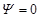 and 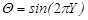,
: and 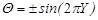,
: 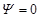 and 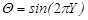,
: and 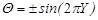,
 and 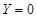: and 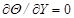,
and 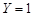: and ,
and 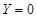: and 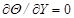,
and 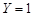: and ,
Here, the use of 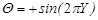 for the right wall yields symmetric sinusoidal temperature distributions on the side walls. Nevertheless, anti-symmetric sinusoidal thermal boundary conditions will be resulted if one takes 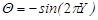 therein.
3. Entropy Generation
For a porous media that follows the Darcy's law, the dimensionless rate of entropy generation can be expressed as [15]
with being the Eckert number, 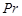 being the Prandtl number, and being the dimensionless temperature difference (i.e., 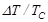). Here, the first term of Eq. (5) is due to the transfer of heat and is referred to as Heat Transfer Irreversibility () while the second term represents the contribution of Fluid Friction Irreversibility (). Thereby
The global entropy generation rate is obtained through integration of the local distribution of entropy generation rate as
4. Solution Procedure
The dimensionless coupled partial differential equations in conjunction with the aforesaid boundary conditions are solved using a control-volume based computational procedure [16]. For this purpose, a non-uniform grid is utilized, based on a grid refinement study. The algebraic equations are solved by a line-by-line iterative procedure. The method sweeps the domain of integration along the x and y axes and uses Tri-Diagonal Matrix Algorithm (TDMA) iteration to solve the system of equations. The convergence criterion employed is the following condition
where stands for either or and 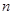 denotes the iteration.
As the numerical values of and become available from the converged solution, the magnitudes of the local and the average Nusselt numbers at the non‑adiabatic walls are calculated from the following expressions.
It is noteworthy that, during the current computations, the following parameters are maintained constant.
5. Simulation Results
Two types of analysis are presented in this section. The first one presents a validation for the mathematical model as well as the employed solution procedure. The second analysis, however, shows the contribution of this study that is associated with heat transfer process and entropy generation characteristics in the natural convective flow inside a porous enclosure with symmetric/anti-symmetric sinusoidal temperature variations on the side walls.
5.1. Numerical Validation
The present numerical implementation is validated by reproducing a porous enclosure with uniformly heated/cooled side walls and insulated horizontal walls. Accordingly, numerical values of the average Nusselt number in the side walls are compared with previously published works in Table 1.
Table 1. Comparison of the current average Nusselt number with previously published works
| Authors | |
| Saeid and Pop [17] | 3.002 |
| Misirlioglu et al. [18] | 3.05 |
| Badruddin et al. [19] | 3.2005 |
| Present simulation | 3.068 |
As can be observed, current results bear a strong resemblance to the previously published works. Moreover, contour plots of stream function and temperature are almost the same as those reported in open literature. They are not, however, presented here for the sake of brevity. This provides confidence to the developed code for further studies. Consequently, in what follows, it will be utilized to analyze the development of flow and thermal fields as well as entropy generation characteristics in the buoyancy-driven flow inside the porous enclosure depicted in Fig. 1.
5.2. Flow and Thermal Fields
In what concerns the dimensionless distributions of stream function and temperature, simulation results for the two cases with symmetric and anti-symmetric temperature boundary conditions on the side walls are presented in Figs. 2 and 3.
a) Stream function, 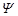
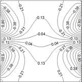
b) Temperature,
a) Stream function, 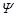
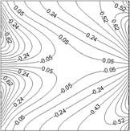
b) Temperature,
Dependence of flow and thermal fields on the wall condition is obvious. It can be witnessed that, when anti-symmetric sinusoidal temperature distributions are applied to the side walls, the flow is characterized by two circulation cells generated in opposite directions inside the enclosure. Notice also that, under the symmetric temperature boundary conditions, four circulation cells appear there. Moreover, the figures demonstrates that if one applied symmetric temperature distributions to the side walls, the contour plots of stream function and temperature becomes more symmetric about 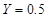 plane. Meanwhile, comparing the magnitudes of stream function in the two cases indicates that the case with anti-symmetric boundary conditions results in more intense streamlines.
Distributions of magnitudes of the local Nusselt number along the right and left walls for the current cases are depicted in Figs. 4 and 5, respectively.
Remarkable variations can be observed in the values of the local Nusselt number. This is not surprising since we have applied sinusoidal temperature distributions to the side walls. It can also be witnessed that, the discrepancies that appear between the results of the two cases is much lower at the left wall. This occurs since the current cases have identical wall conditions on the left side.
Figure 6 plots the distributions of dimensionless temperature along the adiabatic walls. Again, results of the symmetric temperature boundary conditions are distinct from those of the anti-symmetric case. Notice also that, when symmetric temperature distributions are applied, the temperature varies more uniformly along the top and bottom walls.
The overall effects of the two cases upon heat transfer rates are compared in Table 2 wherein the numerical values of the average Nusselt number at the side walls are presented. As expected from the local distributions of the Nusselt number (i.e., Figs. 4 and 5), the case with anti-symmetric temperature boundary conditions achieves higher heat transfer rate.
Table 2. Effect of temperature boundary conditions on heat transfer and entropy generation
| Case | ||
| Symmetric BC's | 4.035 | 9.713 |
| Anti-Symmetric BC's | 5.830 | 13.031 |
5.3. Entropy generation characteristics
Contour plots of fluid friction irreversibility and heat transfer irreversibility for the current cases are displayed in Figs. 7 and 8.
a) Fluid friction irreversibility, FFI
b) Heat transfer irreversibility, HTI
a) Fluid friction irreversibility, FFI
b) Heat transfer irreversibility, HTI
It is clear that, the side walls act as strong concentrators of FFI and HTI. This occurs due to higher values of near wall velocity components and temperature gradients there. Notice also that, a significant portion of the enclosure acts as an ideal region for entropy production wherein both fluid friction irreversibility and heat transfer irreversibility are zero or negligible.
The aforesaid variations of fluid friction irreversibility and heat transfer irreversibility make the distribution of local entropy generation rate inside the enclosure as depicted in Fig 9. Dependence of entropy generation on the wall condition is obvious. To demonstrate this effect further, numerical values of the global entropy generation rate for the two cases are illustrated in Table 2. It can be witnessed that, although the case with anti-symmetric temperature boundary conditions achieves higher heat transfer, it suffers from high entropy generation rate.
a) Symmetric temperature BC's
b) Anti-symmetric temperature BC's
6. Conclusion
Heat transfer process and entropy generation characteristics inside a square porous enclosure with symmetric and anti-symmetric sinusoidal temperature variations on the side walls were simulated and discussed in this study. Results are presented in terms of streamlines, isothermal lines, and iso-entropy generation lines, as well as distributions of fluid friction irreversibility and heat transfer irreversibility. Moreover, variation of the average Nusselt number along the side walls and temperature distribution along the adiabatic walls are analyzed. Based on the presented results, it was concluded that, although the case with anti-symmetric temperature boundary conditions achieves higher heat transfer, it suffers from high entropy generation rate.
Acknowledgment
The author would like to thank the Islamic Azad University for financially supporting this research.
References
[1] Zahmatkesh, I., and Yaghoubi, M., Studies on Thermal Performance of Electrical Heaters by Using Porous Materials, International Communications in Heat and Mass Transfer, Vol. 33, 2006, pp. 259, 267. View Article
[2] Chen, W., and Liu, W., Numerical Analysis of Heat Transfer in a Composite Wall Solar-Collector System with a Porous Absorber, Applied Energy, Vol. 78, 2004, pp. 137, 149. View Article
[3] Saeid, N. H., Natural Convection in Porous Cavity with Sinusoidal Bottom Wall Temperature Variation, International Communications in Heat and Mass Transfer, Vol. 32, 2005, pp. 454, 463. View Article
[4] Basak, T., Roy, S., Paul, T., and Pop, I., Natural Convection in a Square Cavity Filled with a Porous Medium: Effects of Various Thermal Boundary Conditions, International Journal of Heat and Mass Transfer, Vol. 49, 2006, pp. 1430, 1441. View Article
[5] Basak, T., Roy, S., and Takhar, H. S., Effects of Nonuniformly Heated Wall(s) on a Natural-Convection Flow in a Square Cavity Field with a Porous Medium, Numerical Heat Transfer, Part A, Vol. 51, 2007, pp. 959, 978. View Article
[6] Sathiyamoorthy, M., Basak, T., Roy, S., and Pop, I., Steady Natural Convection Flow in a Square Cavity Filled with a Porous Medium for Linearly Side Wall(s), International Journal of Heat and Mass Transfer, Vol. 50, 2007, pp. 1892, 1901.View Article
[7] Oztop, H. F., Natural Convection in Partially Cooled and Inclined Porous Rectangular Enclosures, International Journal of Thermal Sciences, Vol. 46, 2007, pp. 149, 156. View Article
[8] Varol, Y., Oztop, H. F., and Pop, I., Numerical Analysis of Natural Convection for a Porous Rectangular Enclosure with Sinusoidally Varying Temperature Profile on the Bottom Wall, International Communications in Heat and Mass Transfer, Vol. 35, 2008, pp. 56, 64. View Article
[9] Yedder, R. B., and Erchiqui, F., Convective Flow and Heat Transfer in a Tall Porous Cavity Side-Cooled with Temperature Profile, International Journal of Heat and Mass Transfer, Vol. 52, 2009, pp. 5712, 5718. View Article
[10] Zahmatkesh, I., On the Importance of Thermal Boundary Conditions in Heat Transfer and Entropy Generation for Natural Convection inside a Porous Enclosure, International Journal of Thermal Sciences, Vol. 47, 2008, pp. 339, 346. View Article
[11] Basak, T., Kaluri, R. S., and Balakrishnan, A.R., Effect of Thermal Boundary Conditions on Entropy Generation during Natural Convection, Numerical Heat Transfer, Part A, Vol. 59, 2011, pp. 372, 402. View Article
[12] Zahmatkesh, I., Second-Law Analysis of Buoyancy-Driven Flow inside a Rectangular Porous Enclosure with Three Adiabatic Walls, Majlesi Journal of Energy Management, Vol. 2, 2013. View Article
[13] Zahmatkesh, I., Influence of Thermal Radiation on Free Convection inside a Porous Enclosure, Emirates Journal for Engineering Research, Vol. 12, 2007, pp. 47, 52. View Article
[14] Zahmatkesh, I., Dependence of Buoyancy-Driven Flow inside an Oblique Porous Cavity on its Orientation, Emirates Journal for Engineering Research, Vol. 18, 2013, pp. 53, 61. View Article
[15] Mahmud, S., and Fraser, R. A., Magnetohydrodynamic Free Convection and Entropy Generation in a Square Porous Cavity, International Journal of Heat and Mass Transfer, Vol. 47, 2004, pp. 3245, 3256.View Article
[16] Patankar, S. V., Numerical Heat Transfer and Fluid Flow, Hemisphere/McGrawHill, Washington DC, 1980. View Book
[17] Saeid, N. H., and Pop, I., Transient Free Convection in a Square Cavity Filled with a Porous Medium, International Journal of Heat and Mass Transfer, Vol. 47, 2004, pp. 1917, 1924. View Article
[18] Misirlioglu, A., Baytas, A. C., and Pop, I., Free Convection in a Wavy Cavity Filled with a Porous Medium, International Journal of Heat and Mass Transfer, Vol. 48, 2005, pp. 1840, 1850. View Article
[19] Badruddin, I. A., Zainal, Z. A., Narayana, P. A., and Seetharamu, K. N., Heat Transfer in Porous Cavity under the Influence of Radiation and Viscous Dissipation, International Communications in Heat and Mass Transfer, Vol. 33, 2006, pp. 491, 499. View Article